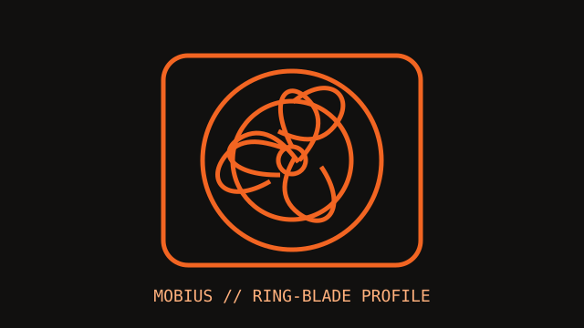

[ IDENTIFIED SKU // MFZ-M2NN-21NPK-R1 ]
Cooler Master Mobius 120
The non-illuminated Mobius 120 is a 25 mm-thick PWM fan. This record is distinct from the Mobius 120P ARGB model.

Exact identity: Mobius 120, product number MFZ-M2NN-21NPK-R1. Do not use these data for the 120P ARGB model or another Mobius size.
Specifications
| Frame | 120 × 120 × 25 mm |
|---|---|
| Speed / airflow / pressure / noise | 0–2050 RPM ±10%; up to 63.1 CFM; 2.69 mm H₂O; 22.6 dB(A). |
| Bearing | Loop Dynamic Bearing |
| Connector / control | 4-pin fan connector; PWM control. No lighting connector is specified for this non-LED SKU. |
| Electrical | 12 V DC rated; 0.12 A rated current; 1.44 W power consumption. |
| Fit and host compatibility | 120 mm case, heatsink, or radiator mounting with 25 mm depth; verify the mounting pattern, fastener length, and controller/header current limit in the host documentation. |
Installation
Use a PWM-capable 4-pin header/controller and keep the frame, cable, and rotor clear of the case or radiator assembly. Follow host-specific screw guidance.
Manufacturer sources
- Cooler Master — Mobius 120 product pageCurrent manufacturer product record and model identity.
- Cooler Master — Mobius 120 technical product pageManufacturer technical specifications and downloads for MFZ-M2NN-21NPK-R1.